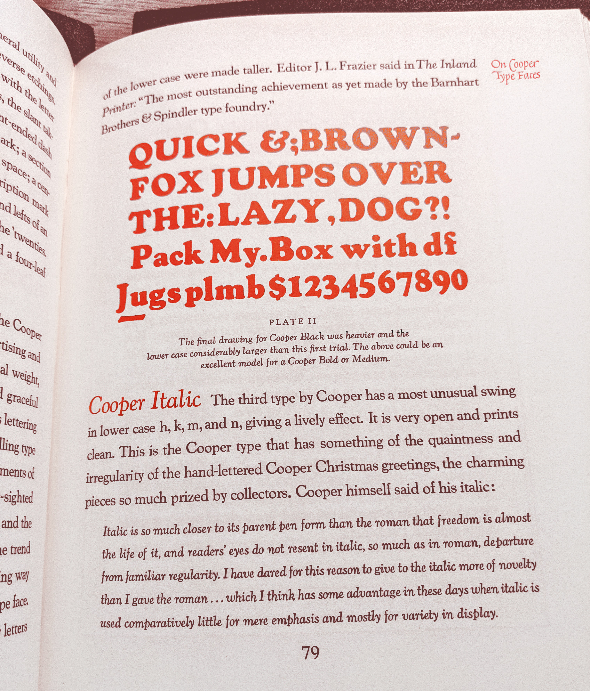

⚘ A long rant about historically inaccurate Cooper revivals...
While doing research for my font Cooper*, I couldn’t help but learn about the Cooper revivals other font foundries offer. I was surprised to find out that many of them are of poor quality, or based on some amount of misinformation. This has the unfortunate side effect of making Oswald Cooper’s work look worse than it truly was. I want to set the record straight, and so this is a perhaps overly detailed account of my finding.
❧
First and foremost, I would like to give my flowers to the Japanese type foundry Wordshape. Their regular-weighted Cooper revival is well researched, and clearly done with a lot of respect to Oz Cooper and his legacy. Their typeface Cooper Text shares many similarities with Cooper*, however Cooper Text includes ornamental initials (which my font does not). These ornamental capitals are beautiful and based on Oz Cooper’s designs. Currently Wordshape is the only place in the world they can be found. Their font is well worth the $25 price tag and makes a nice companion font to Cooper*. Wordshape does not currently offer a complete Cooper family, so Cooper* still marks a significant first in terms of Cooper revivals, but I would be remiss if I didn’t mention Wordshape as they are the first to do a historically accurate, regularly weighted Cooper. Please check out their foundry.
❧
If you search for Cooper
on a font marketplace such as MyFonts, it will return several Cooper font families with a range of weights, such as Bitstream’s Cooper BT or URW Type Foundry’s Cooper Old Style. The lighter weight versions of these typefaces share little resemblance to Oswald Cooper’s original designs.
This is the original Cooper
Click and drag the knob below to cycle through Cooper revivals. This is my font: Cooper*
This is URW Type Foundry’s Cooper Old Style
This is Bitstream’s Cooper BT. This same font is also offered by Paratype.

This is Paratype’s Cooper BT
I can only speculate as to what’s going on here and why these fonts look the way they do. To my eyes URW’s Cooper Old Style is the more historically accurate one. Most of its letters resemble the original, although there’s a certain crudeness or roughness to them, as if they have been photocopied several times and lost some of their clarity in the process. Thin lines have become thicker, and some of the details have been rounded off. Bizarrely some letters are completely inaccurate. The lowercase g
for example looks nothing like the original, nor does the 3.
To give URW Type Foundry the benefit of the doubt here, I’m guessing that whatever they were using as a reference when making this font was incomplete and of poor quality. Their reference probably didn’t include a lowercase g
so they guessed what it might have looked like based off of the italic. Maybe their reference really was photocopied many times and the crudeness is not their fault.
If URW’s Cooper Old Style were released today there would be no excuse for this, as the University of Michigan has made a copy of the 1934 American Type Founders catalog available online for free, which includes a complete character set for Cooper, but maybe this font was made long ago before the internet was as expansive. In any case, it is neither a particularly accurate Cooper, nor is it a well-made font in my opinion.
Bitstream/Paratype’s Cooper BT shares little if any resemblance to the original Cooper. There is much less contrast between thick and thin lines, making it unsuitable for laying out passages of text. The curved, smiling serifs at the bottom of the r
or l
have been flattened into straight lines (or perhaps ovals). Ascending letters such as k
and l
are comparatively short. I could go on, but I’d be laboring the point. These are different typefaces, and much of the personality has been lost.
Which is not to say that I dislike Cooper BT. To me, the original Cooper evokes the time period from which is comes: the 1920s. Cooper BT on the other hand evokes the 60s and 70s, decades that famously saw a resurgence in popularity for Cooper Black. It is a well constructed font with a personality and identity of its own, and when used properly is pleasing and stylish.
New York Magazine’s Strategist looking pretty chic in Cooper BT
This version of the Breaking Bad logo I got from Wikipedia uses Cooper BT
There isn’t a ton of information online about Cooper BT, but what is available is instructive:
Bitstream Cooper was designed at Bitstream in 1986 by means of adding light, medium, and bold styles, with the corresponding italics, to the existing black ones.
In other words, the folks over at Bitstream were apparently unaware that a non-bold version of Cooper had already existed for over six decades when they made Cooper BT so instead of just going with Oz Cooper’s designs, they took it upon themselves to invent a light version of Cooper to match Cooper Black.
Throwing out half of a typefaces’s styles so you can reverse engineer what the tossed styles might look like is a interesting intellectual exercise, and in the case of Cooper BT it has yielded worthwhile results. However, I do wish that Bitstream/Paratype would update their font’s descriptions to clarify that there was a historical non-bold version of Cooper which looks very different from the one they’re selling. I imagine it was an honest mistake, but updating a font’s description is a relatively easy fix.
This kind of research is much easier today, in the internet era, but to be perfectly honest, I’m still a bit befuddled as to how this mistake was made. There are many books that include information about the regular weight version of Cooper, books that would of existed in the 80s. Some of my research I did for free at a public library. Wasn’t that possible then?
I suppose you don’t know what you don’t know, and if you were unaware that Cooper Black was ever part of a family you wouldn’t think to research it in the first place.
One of the problems with this situation, is that unless you are super knowledgeable about Cooper’s work, or have carefully read the font’s description (it’s actually quite easy to miss), you could easily mistake Cooper BT, a font designed by Bitstream in the 80s, for the original designed by Cooper over half a century earlier.
❧
Miles Newlyn is a typographer out of London who’s worked with some of the biggest brands on earth. He’s done work with Cadillac, the Tate museum, and more recently, Burger King. In 2020 he decided to try his hand at a Cooper revival—or in his words an improvement over the original, whose lighter weights have become dated.
Cooper’s bulbous, oval serifs had not been modernised. There has been very little professional reappraisal of Cooper as a font family, and even less in that elliptical serif style.
The emphasis (in both quotes) is mine. He describes Cooper’s serifs as oval or elliptical, but looking at the original Cooper, would you describe its serifs as ovals?
Just to be clear I’m talking about what’s inside the red ovals. I realize the irony in using ovals to highlight what I’m talking about.
I wouldn’t. They look like crescents or little smiles to me. In fact, it doesn’t really sound like he’s describing the original Cooper at all; it kind of sounds like he’s describing Cooper BT. He removes all doubt when he includes a photo on his website of the original
cooper:
This is from his website.
Those serifs I would describe as oval. However, that’s the more modern (and not historically accurate) Cooper BT.
Bitstream has unknowingly set the perfect trap, and Newlyn has fallen right into it. Presumably he read somewhere, correctly, that Cooper Black originally had a lightweight counterpart, and, remembering this factoid, assumed, understandably, that Bitstream and Paratype had done their due-diligence and were selling something that in some way resembled the original Cooper and not just something they had invented out of whole cloth.
What’s particularly unfortunate is that Mr. Miles Newlyn goes on to criticize the original
Cooper, characterizing it as outdated, lacking in consistency, and less suitable for laying out passages of text. All of which are problems his font solves, available now for $1,400 USD.
Which, of course Cooper is inconsistent, if you’re going off of Cooper BT. One part was made over half a century after the other by entirely different people using vastly different technologies.
Miles Newlyn specifically says that the lighter weights have become dated, so he’s specifically critiquing the part that wasn’t actually made by Oz Cooper. Imagine if you had spent years bringing some kind of art into the world, a book say, and someone unnecessarily rewrites the first half, only for someone else to say the book is inconsistent and the first half is bad after having read the rewritten version. It stings.
It undermines Oswald Cooper, his work, and his legacy. I don’t think his work looks outdated, nor do I think it looks inconsistent. I would be shocked if Newlyn looked at the true original and characterized it as unsuitable for laying out passages of text. It looks gorgeous in this context, and to my eyes is more legible that Newlyn’s improved
version. There are good faith critiques one can raise about Cooper’s typeface, but the ones Newlyn raises on his website are based in factual inaccuracies.
I am frustrated by this. This kind of research would have been trivial in 2020, when Newlyn made his font. The Wikipedia page for Cooper Black has had an accurate picture of the lighter weight Cooper in its gallery since 2017.
To me, charging such a premium price implies a certain level of due diligence. For context, Cooper BT only costs $150, almost a tenth of the price of Newlyn’s offering. If I had spent over a thousand dollars on a font, only to look at a Wikipedia article and realize my purchase was predicated on misinformation, I would feel cheated. It feels both disrespectful to Oz Cooper, but also to Newlyn’s customers, who are paying such a premium. I’m embarrassed for what it says about type design as a profession. This man is obviously highly regarded. Is this the kind of attitude people need to get ahead in this profession?
On some level, it’s difficult for me to believe this whole situation came about due to ignorance. His blog post includes a plethora of well-researched information about Oz Cooper and his font. There is, for example, a simply charming photo of Oz with his prize winning flowers.
There’s also this picture of an earlier draft of Cooper Black:
He doesn’t specify where he came across this image, but I’m guessing he got it from page 79 of The Book of Oz Cooper:
Oh hey! It’s the quote about italics from my Cooper* page!
It probably goes without saying, but The Book of Oz Cooper, a book dedicated to the life and work of Oz Cooper, makes it pretty clear that Cooper Black was first released with a non-bold counterpart, and it’s also pretty clear what that font looked like considering the entire book is written using Cooper. (The book is gorgeous, by the way. The original version of Cooper is very well suited for laying out passages of text.)
❧
I have spent years as a font designer and even longer in the graphic design community. I don’t think that Miles Newlyn is lying, per say. Rather, I think that what’s going on here is indicative of a larger problem within the community. There is a very strong emphasis placed on sounding educated and informed, just as there is a strong emphasis placed on telling a good story. Sometimes the truth makes for a less compelling narrative than a falsehood, and therefore many people let the truth fall by the wayside.
I have been guilty of this myself. There are things I have said that I look back on and question if I really believed what I was saying, or if I just felt it made for a good story. In the description of my font Jost* I imply my font is perhaps more functional in the digital era, than Futura. I can make a clear and coherent argument for this, but do I really believe it? Maybe it’s just a good story that helps sell my font.
But, I have become more and more disillusioned with the culture surrounding graphic design. It upsets me when we allow disinformation to misrepresent people’s work or ideas, and this culture also makes graphic design as a field less accessible.
There are many people who, for one reason or another, struggle to embody the self-aggrandizing attitude that is often necessary in being a graphic designer. Maybe they are less comfortable tooting their own horn, or maybe they are more committed to truth telling. Should these people be unable to rise in the world of graphic design, or should they be judged on the quality of their work? Maybe a culture that values clarity and truthfulness would lead to more diversity in the world of graphic design (type designers in particular are overwhelmingly white, and it is also a male-dominated field).
I have spent much of this rant talking about Miles Newlyn. Please don’t bully or harass him, or anyone for that matter, on account of my writing; that would devastate me. I am not upset with him specifically. I have been upset about the culture surrounding graphic design for a long time, long before I knew anything about Miles Newlyn and his font. Most people in the world of graphic design play it fast and loose with the truth to some degree, this just happens to be a moment that felt easier to point to and explain. It is a moment that illustrates a large and pervasive cultural problem, and to direct too much anger at Miles Newlyn is missing the forest for the trees.
I don’t know what to do. I hope that talking about it might help inspire change. I would be delighted if you talked about it too; the more people we can get thinking critically about this, the bigger of an impact it will have. Just try and be thoughtful and try and be constructive. I will try and do the same.
Thank you for listening to my rant.
❦